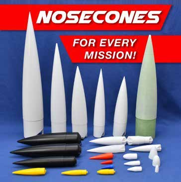
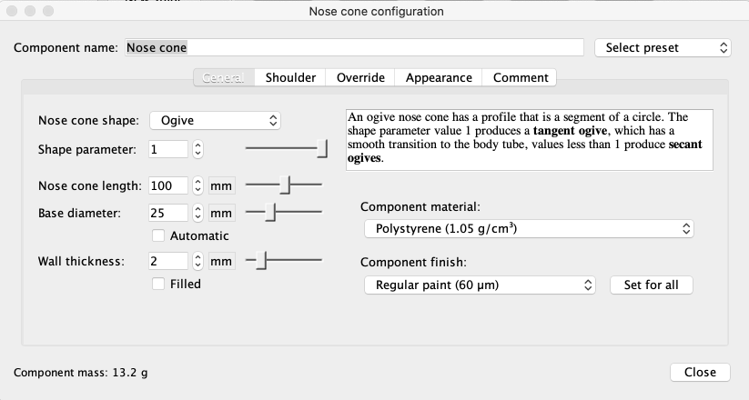

Qué cohete necesitamos y qué nariz elegimos
Elegir una nariz con una misión concreta, comparar alternativas y preparar una muestra de encaje.
Antes de elegir una forma, define la misión
Un cohete puede parecerse a otro y tener un propósito diferente. En nuestro proyecto importa aprender a construir, revisar y recuperar el conjunto. Una demostración científica añade sensores y datos. Un cohete de sondeo es un vehículo de investigación de trayectoria suborbital; no debe confundirse con un lanzador que coloca una carga en órbita. Llevar electrónica tampoco convierte automáticamente un modelo de aula en un vehículo espacial.
Tres formas de ordenar el rubro
| Criterio | Ejemplos | En nuestro curso |
|---|---|---|
| Propósito | Aprendizaje, recreación, instrumentación | Aprendizaje; CanSat docente |
| Arquitectura | Una etapa, varias etapas, varios motores | Una etapa y un motor comercial |
| Clases de motor | Letras de impulso total | Leer la ficha del motor elegido |
| Material y tamaño | Tubos, piezas impresas y dimensiones | Modelo pequeño y ligero |
En la nomenclatura de modelismo, la letra del motor identifica un intervalo de impulso total. El impulso describe empuje acumulado durante un tiempo y se expresa en N·s. No es energía, que se expresa en joules. Un motor de clase C no necesita un cohete de una longitud fija y dos motores con la misma letra pueden tener curvas de empuje distintas.
Intervalos introductorios de impulso
| Clase | Impulso total, N·s |
|---|---|
| A | Mayor que 1,25 y hasta 2,50 |
| B | Mayor que 2,50 y hasta 5,00 |
| C | Mayor que 5,00 y hasta 10,00 |
| D | Mayor que 10,00 y hasta 20,00 |
Una misión se puede escribir como una tarea observable. “Aprender cohetería” es una intención amplia. “Construir en equipo, desmontar la nariz y explicar dónde se guarda la recuperación” permite decidir qué se necesita. El equipo puede dibujar esas funciones junto a una vista del cohete. Si una forma exterior deja de permitir una de ellas, hay una incompatibilidad que resolver antes de discutir cuál parece más moderna. El tamaño pequeño facilita la fabricación, pero no sustituye esta definición de la misión.
Reconocer narices sin buscar una ganadora universal

La cónica tiene un perfil lateral recto. La ojival usa una curva que se estrecha hacia la punta. La elipsoidal es más redondeada. Podemos reconocerlas sosteniendo piezas, viendo su silueta o cambiando Shape en OpenRocket. La fotografía reúne piezas de tamaños distintos: no sería justo atribuir una diferencia de masa solo a su forma si también cambian diámetro, longitud o espesor.
Primera comparación para nuestro taller
| Forma | Qué facilita observar | Qué revisar |
|---|---|---|
| Cónica | Relación clara entre punta, base y hombro | Punta real, pared y acabado |
| Ojival | Continuidad de la curva con el cuerpo | Parámetro de forma y masa fabricada |
| Elipsoidal | Volumen del frente y contorno redondeado | Longitud, acceso y espacio interior |
La elección inicial debe caber en el proceso que tenemos. Una nariz que imprime bien y se reemplaza con facilidad puede ser adecuada para aprender aunque otra tenga un resultado aerodinámico ligeramente distinto. Más adelante contrastaremos el vehículo completo. Hoy no necesitamos calcular fricción ni resolver ecuaciones de flujo.
Durante el ascenso, el frente del vehículo aparta el aire. El arrastre es la parte de la fuerza aerodinámica que se opone al movimiento respecto al aire. Depende del vehículo y de sus condiciones de movimiento. La forma de la nariz influye, pero también cuentan el cuerpo, las aletas y las transiciones entre piezas. Una punta muy alargada puede requerir más material o un montaje más delicado. En nuestro primer taller conviene observar esa compensación y comparar después el modelo completo, en condiciones equivalentes, sin declarar una forma ganadora para cualquier velocidad.
Comparar dos preguntas diferentes
La primera pregunta es geométrica: ¿qué cambia al sustituir solo la forma? Conservamos base y longitud visible, además de cuerpo y aletas. La segunda es de fabricación: ¿qué pieza conviene construir? Entonces cuentan masa impresa, tiempo, soportes, encaje y acabado. Una comparación geométrica y otra de piezas reales pueden conducir a decisiones diferentes sin contradecirse.
Dos narices en un ejercicio de aula
Datos ficticios: A pesa 8 g, tarda 45 min e imprime con el encaje correcto. B pesa 12 g, tarda 70 min y requiere corregir el hombro. Las dos cumplen la forma exterior que se propuso.
Razonamiento del caso
Para aprender a fabricar y reponer piezas, A tiene ventajas de masa y tiempo y ya resolvió el encaje. Eso permite una elección provisional. No demuestra que A tenga menos resistencia al aire, porque no se han simulado ni medido esas fuerzas.
Qué conservar y qué registrar
| Comparación | Mantener | Registrar como resultado |
|---|---|---|
| Solo forma | Base, longitud, cuerpo y aletas | Cambio de geometría y resultados del modelo |
| Fabricación real | Impresora y criterio de aceptación | Masa, tiempo y encaje |
| Cambio completo | Misión y requisitos del conjunto | Todo lo que cambió entre versiones |
El ejemplo no contiene una medición real de MECRO ni una simulación ejecutada. Es un caso para practicar la decisión. En el taller se sustituirán las cifras por las de cada equipo. Si cambias la longitud para mejorar el espacio interior, registra que ya no estudiaste exclusivamente la forma.
Conviene separar las condiciones necesarias de las preferencias. Que el hombro pueda encajar y que la pieza permita el funcionamiento del conjunto son condiciones que deben resolverse. El color o una pequeña diferencia de tiempo pueden servir para elegir entre opciones que ya cumplen esas condiciones. Una tabla de puntuación no debe hacer que una nariz incompatible gane porque recibió muchos puntos por apariencia. Primero se descartan o corrigen incompatibilidades y después se comparan alternativas viables.
Práctica en OpenRocket: tres versiones de nariz

- Abre la versión del equipo y guarda una copia con sufijo NARIZ_A. En Nose Cone conserva el diámetro de base y la longitud visible que has declarado.
- Selecciona Conical y anota el nombre del material, espesor y masa calculada. El hombro sigue la medida real del interior del tubo.
- Guarda NARIZ_B y cambia a Ogive. Revisa el parámetro de forma. Anota lo que cambiaste y lo que quedó igual.
- Crea NARIZ_C con Ellipsoid. Obtén una captura lateral de cada alternativa con la misma escala.
- Compara dimensiones y masas. Todavía no atribuyas una altura de vuelo a estas piezas si falta completar el vehículo y seleccionar su conjunto comercial.
Cuando el programa estima masa a partir de una envolvente uniforme, puede representar de forma imperfecta una pieza impresa. Conserva esa estimación como tal. La comparación con la pieza pesada se realizará al tener el prototipo. [OR1, BODY]
La captura lateral ayuda a reconocer lo que cambió. Superponer mentalmente las bases permite comprobar si las tres narices conservan longitud y diámetro. El hombro pertenece a la unión interior y no debe añadirse a la longitud visible. Si una opción aumenta la longitud visible, el modelo ya no está comparando únicamente la curvatura. El registro de medidas hace explícita esa diferencia y permite al docente explicar una comparación honesta con pocos conceptos.
Práctica de fabricación: primero el encaje
La nariz tiene una interfaz con el cuerpo: su hombro debe entrar en la abertura disponible. El equipo puede dibujar la forma exterior en CAD, pero la medida del tubo decide el encaje. Antes de imprimir una pieza completa, el docente agrupa muestras cortas que permiten estudiar ese ajuste sin consumir todo el tiempo de la máquina.
- Registra diámetro interior, ovalidad observable y longitud disponible de encaje del tubo real.
- Prepara en CAD muestras identificadas que varíen solo la dimensión de encaje. El docente revisa la serie antes de imprimir.
- Mide las piezas obtenidas y diferencia la dimensión dibujada de la dimensión impresa.
- Prueba la unión sin forzar el tubo. Describe si entra, se traba o tiene juego apreciable.
- Conserva la muestra elegida con el identificador del tubo y el perfil de impresión. No traslades automáticamente el resultado a otro material o impresora.
Ficha de comparación de narices
| Dato | A | B |
|---|---|---|
| Forma y longitud | Por registrar | Por registrar |
| Masa real / g | Por pesar | Por pesar |
| Tiempo / min | Del laminador y del registro | Del laminador y del registro |
| Encaje en el tubo identificado | Observación | Observación |
| Cambio pendiente | Describir | Describir |
Una muestra que entra correctamente resuelve una parte del problema. Todavía hay que comprobar pared, unión, sujeción y funcionamiento del conjunto de recuperación. La nariz completa se acepta como parte de ese sistema, no por una única medida aislada.
La misma medida dibujada puede producir resultados distintos en dos impresoras o materiales. No se cambia todo el CAD para corregir el resultado de una sola muestra sin investigar su origen. Conserva la dimensión nominal y la medida obtenida. Si el taller trabaja con varios tubos, identifica cuáles comparten realmente la misma abertura. El repuesto de una nariz necesita corresponder al tubo y al proceso que se comprobó, no únicamente al nombre del archivo.
La elección cambia con la misión
Cómo justificar la misma forma en misiones distintas
| Misión | Prioridad | Prueba antes de elegir |
|---|---|---|
| Primer montaje | Encaje y facilidad de fabricación | Muestras, masa y repetición |
| Reutilización | Acceso, reparación y repuestos | Montajes repetidos y revisión del borde |
| Carga docente | Espacio útil y acceso a electrónica | Maqueta de carga y comprobación de interfaces |
Para el modelo del alumno se puede elegir una forma sencilla que el equipo sea capaz de fabricar y revisar. Para el vehículo docente con CanSat puede ser más importante el acceso a la carga que reducir unos minutos de impresión. Eso no autoriza trasladar la nariz del demostrador al cohete pequeño sin revisar dimensiones y masa.
Qué conclusión sí podemos defender
¿Podemos anunciar que la nariz más liviana “es la más aerodinámica”?
Razonamiento del caso
No. La balanza resuelve una comparación de masa. Para estudiar el comportamiento aerodinámico hay que conservar condiciones y usar una simulación pertinente o una prueba adecuada. En este nivel basta separar ambas preguntas.
Antes de cerrar, cada equipo muestra sus tres archivos y elige una alternativa provisional para la misión de aprendizaje. Debe señalar una razón, una evidencia y una comprobación pendiente. Las fichas quedan abiertas hasta que existan piezas reales; “pendiente” es más preciso que una cifra inventada.
Preguntas de cierre
¿Un cohete de 35 cm es automáticamente de clase A?
No. La letra corresponde al intervalo de impulso del motor, no a la longitud.
¿Qué se conserva para comparar solo la forma?
Base, longitud visible y el resto del modelo; además se documentan material y masa.
¿Una nariz que pesa menos tiene menor arrastre?
El peso no demuestra el arrastre. Son comparaciones diferentes.
Entrega
Tres archivos .ork, ficha comparativa y decisión provisional según misión.
Bibliografía y procedencia
[CAT] National Association of Rocketry. Rocket Motor Resources.
[HPR] National Association of Rocketry. High Power Rocketry Certification.
[OR1] OpenRocket. Basic Rocket Design.
[BODY] OpenRocket. Body Components Basics.
[AP] Apogee Components. Peak of Flight 629.
[PR1] Prusa Research. Modeling with 3D printing in mind.